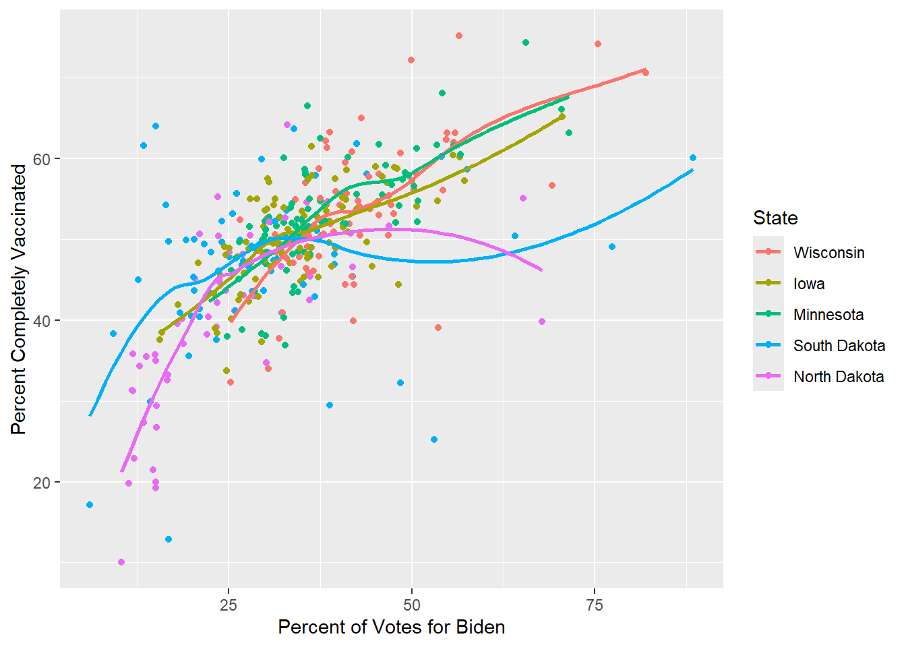
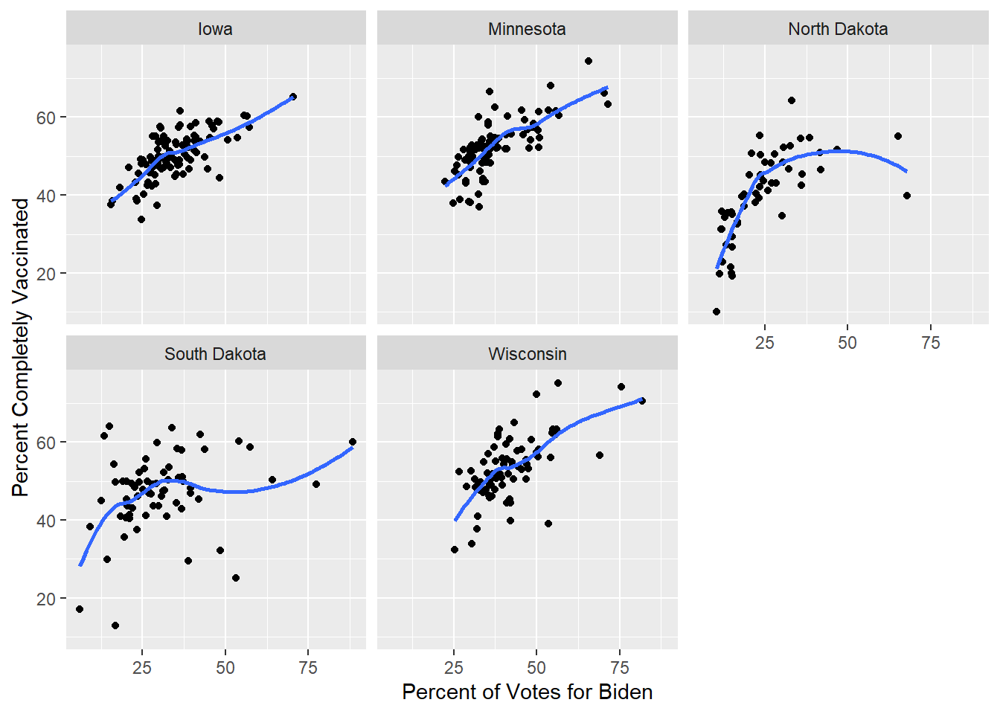
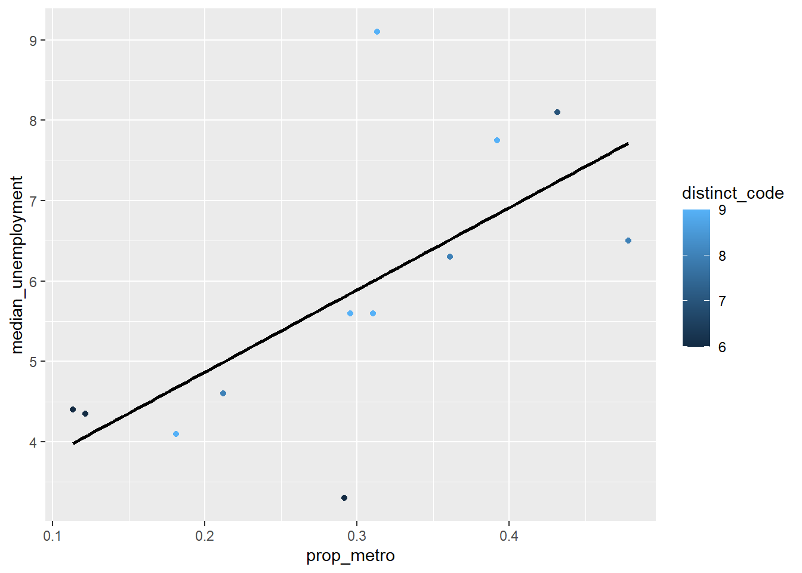

A recent Stat 272 project examined determinants of covid vaccination rates at the county level. Our data set contains 3053 rows (1 for each county in the US) and 14 columns; here is a quick description of the variables we’ll be using:
state = state the county is located in
county = name of the county
region = region the state is located in
metro_status = Is the county considered “Metro” or “Non-metro”?
rural_urban_code = from 1 (most urban) to 9 (most rural)
perc_complete_vac = percent of county completely vaccinated as of 11/9/21
tot_pop = total population in the county
votes_Trump = number of votes for Trump in the county in 2020
votes_Biden = number of votes for Biden in the county in 2020
perc_Biden = percent of votes for Biden in the county in 2020
ed_somecol_perc = percent with some education beyond high school (but not a Bachelor’s degree)
ed_bachormore_perc = percent with a Bachelor’s degree or more
unemployment_rate_2020 = county unemployment rate in 2020
median_HHincome_2019 = county’s median household income in 2019
Consider only Minnesota and its surrounding states (Iowa, Wisconsin, North Dakota, and South Dakota). We want to examine the relationship between the percentage who voted for Biden and the percentage of complete vaccinations by state. Generate two plots to examine this relationship:
A scatterplot with points and smoothers colored by state. Make sure the legend is ordered in a meaningful way, and include good labels on your axes and your legend. Also leave off the error bars from your smoothers.
vaccine_data |>filter(state %in%c("Iowa", "Wisconsin", "North Dakota", "South Dakota", "Minnesota")) |>ggplot(mapping =aes(x = perc_Biden, y = perc_complete_vac, color =fct_reorder2(state, perc_Biden, perc_complete_vac))) +geom_point() +geom_smooth(se =FALSE) +labs(color ="State", x ="Percent of Votes for Biden",y ="Percent Completely Vaccinated")
`geom_smooth()` using method = 'loess' and formula = 'y ~ x'

One plot per state containing a scatterplot and a smoother.
vaccine_data |>filter(state %in%c("Iowa", "Wisconsin", "North Dakota", "South Dakota", "Minnesota")) |>ggplot(mapping =aes(x = perc_Biden, y = perc_complete_vac)) +geom_point() +geom_smooth(se =FALSE) +facet_wrap(vars(state)) +labs(color ="State", x ="Percent of Votes for Biden",y ="Percent Completely Vaccinated")
Ignoring unknown labels:
• colour : "State"
`geom_smooth()` using method = 'loess' and formula = 'y ~ x'

Describe which plot you prefer and why. What can you learn from your preferred plot?
I prefer the second plot. The second plot still allows you to compare trends in different states, but also allows you to clearly see the shape of the smoother in each individual state, while having them overlap in the first plot muddles the individual trends.
Produce 3 different plots for illustrating the relationship between the rural_urban_code and percent vaccinated. Hint: you can sometimes turn numeric variables into categorical variables for plotting purposes (e.g. as.factor(), ifelse()).
vaccine_data |>ggplot(aes(x = rural_urban_code, y = perc_complete_vac)) +geom_jitter() +geom_smooth(method ="lm")
State your favorite plot, why you like it better than the other two, and what you can learn from your favorite plot. Create an alt text description of your favorite plot, using the Four Ingredient Model. See this link for reminders and references about alt text.
My favorite is the first plot (the jitter scatterplot). This one shows the most information, it preserves all 9 levels of rural-urban code and it shows how many points are in each category with the jitter. But with this information, the smoother still shows a clear trend and makes the graph more readable. This plot shows that as rural-urban code increases (that is, as counties become more rural), the percent of the county that is completely vaccinated decreases.
Alt text: This is a jitter plot where each county gets a point, and the points are on a scatterplot with the x coordinate slightly adjusted so there are no overlapping points. There is also a line showing the general tren of the points. The x axis represents the rural urban code of the county and the y axis represents teh percentage of the county that is completely vaccinated. The rural urban code ranges from 1 to 9 and the percent completely vaccinated ranges from 0 to 100. The linear line has a downward slope, indicating that as counties become more rural they have a lower percent completely vaccinated. We can also see that 5 is the least common rural urban code and that 6 is the most common rural urban code.
BEFORE running the code below, sketch the plot that will be produced by R. AFTER running the code, describe what conclusion(s) can we draw from this plot?
BEFORE running code: This code is going to give a scatterplot with 11 points (representing the 10 states with the most counties and an “other” point with all remaining states lumped together). The x axis is going the be IQR of percent of votes for Biden, and the y axis is going to be a list of 10 states and an other category. The states on the y axis will be listed in order of IQR of percent of votes for Biden.
vaccine_data |>filter(!is.na(perc_Biden)) |>#Get rid of NAs in perc_Biden columnmutate(big_states =fct_lump(state, n =10)) |>#keep 10 bigest states, rest lumped into othergroup_by(big_states) |>summarize(IQR_Biden =IQR(perc_Biden)) |>#Gives IQR for perc_Biden by big_statesmutate(big_states =fct_reorder(big_states, IQR_Biden)) |>#reorders big_state by IQR_bidenggplot() +geom_point(aes(x = IQR_Biden, y = big_states)) #gives scatterplot
From this graph, we can see that states like Virginia and Georgia had large IQR, that Virgina had counties that had a wide range of percent of votes for Biden. The lumped together 40 states also had a wide range of percent of votes for Biden.
In this question we will focus only on the 12 states in the Midwest (i.e. where region == “Midwest”).
Create a tibble with the following information for each state. Order states from least to greatest state population.
number of different rural_urban_codes represented among the state’s counties (there are 9 possible)
Use your tibble in (a) to produce a plot of the relationship between proportion of Metro counties and median unemployment rate. Points should be colored by the number of different rural_urban_codes in a state, but a single linear trend should be fit to all points. What can you conclude from the plot?
tibble_a |>ggplot(aes(prop_metro, median_unemployment)) +geom_smooth(method ="lm", se = F, color ="black")+geom_point(aes(color = distinct_code))
`geom_smooth()` using formula = 'y ~ x'

From this plot, we can tell that as a state has an increasing proportion of “metro”counties, the median unemployment in the states counties also increases.
In this next section, we consider a few variables that could have been included in our data set, but were NOT. Thus, you won’t be able to write and test code, but you nevertheless should be able to use your knowledge of the tidyverse to answer these questions.
Here are the hypothetical variables:
HR_party = party of that county’s US Representative (Republican, Democrat, Independent, Green, or Libertarian)
people_per_MD = number of residents per doctor (higher values = fewer doctors)
perc_over_65 = percent of residents over 65 years old
perc_white = percent of residents who identify as white
Describe the tibble temp created above. What would be the dimensions? What do rows and columns represent?
The dimensions would be a 3 by 4 tibble. Expect 3 rows from the group_by MD_group (which was defined to have 3 levels), and 3 columns of data (n, mean_perc_vac, and mean_white) and a column for the group names for 4 columns total.
What would happen if we replaced new_perc_vac = ifelse(perc_complete_vac > 95, NA, perc_complete_vac) with new_perc_vac = ifelse(perc_complete_vac > 95, perc_complete_vac, NA)?
Before, we created a new variable new_perc_vac that preserved the original value of perc_complete_vac when perc_complete_vac was less than or equal to 95, and gave NA when perc_complete_vac was greater than 95. Now that is swaped, so the original value of perc_complete_vac will be preserved when perc_complete_vac is greater than 95 and given as NA when perc_complete_vac is less than or equal to 95.
What would happen if we replaced mean_white = mean(perc_white, na.rm = TRUE) with mean_white = mean(perc_white)?
We would get an NA message. NA values are “contagious”, so if you tried to calculate the mean while one value was missing, the mean would be reported as missing.
What would happen if we removed group_by(MD_group)?
The group by tells the summarize function to create seperate counts and means for each group, but with out it summarize will do totals for the whole dataset regardless of MD_group.
Hypothetical R chunk #2:
# Hypothetical R chunk 2ggplot(data = vaccine_data) +geom_point(mapping =aes(x = perc_over_65, y = perc_complete_vac, color = HR_party)) +geom_smooth()temp <- vaccine_data |>group_by(HR_party) |>summarise(var1 =n()) |>arrange(desc(var1)) |>slice_head(n =3)vaccine_data |>ggplot(mapping =aes(x =fct_reorder(HR_party, perc_over_65, .fun = median), y = perc_over_65)) +geom_boxplot()
Why would the first plot produce an error?
The geom_smooth command doesn’t have enough information to make a line, the mapping is only in geom_point and not ggplot. This could be fixed by copying the mapping info into geom_smooth or adding the mapping info to ggplot.
Describe the tibble temp created above. What would be the dimensions? What do rows and columns represent?
The dimensions would be 3 by 2. There would be 3 rows (from the slice head) representing the 3 HR_party with hightest var1, and 2 columns with one for variable names and one for var1.
What would happen if we replaced fct_reorder(HR_party, perc_over_65, .fun = median) with HR_party?
The order of the boxplots would potentially change, as instead of ordering boxplots by the median they would be ordered alphabetically.
Hypothetical R chunk #3:
# Hypothetical R chunk 3vaccine_data |>filter(!is.na(people_per_MD)) |>mutate(state_lump =fct_lump(state, n =4)) |>group_by(state_lump, rural_urban_code) |>summarise(mean_people_per_MD =mean(people_per_MD)) |>ggplot(mapping =aes(x = rural_urban_code, y = mean_people_per_MD, colour =fct_reorder2(state_lump, rural_urban_code, mean_people_per_MD))) +geom_line()
Describe the tibble piped into the ggplot above. What would be the dimensions? What do rows and columns represent?
There would be 45 rows and 3 columns. The group by will have summarize group by each combination of state_lump and rural_urban_code, and we know there will be 5 categories in state_lump (the four states with the most counties and a “other” category that lumps the others together) and there are 9 levels of rural_urban_county, so together there are 5 x 9 = 45 rows. There will be 3 columns, one with state_lump, one with rural_urban_code, and one with mean_people_per_year.
Carefully describe the plot created above.
The plot will be of 5 lines with no points, where each line has a different color and represents the 5 levels of state_lump (the 4 states with the most counties and an “other”option with the rest of the states lumped together). The x axis will be rural_urban_code and the y axis will be mean_people_per_MD. The legend will be in descending order showing the states with the highest to lowest mean_people_per_MD at the last value of rural_urban_code.
What would happen if we removed filter(!is.na(people_per_MD))?
You would potentially get NA’s in your tibble and then problems loading the plot. If there was an NA in people_per_MD and you didn’t filter it out, R would be unable to calculate its mean in the summary line and give an NA, which is then piped into the plot and cannot be graphed.
What would happen if we replaced fct_reorder2(state_lump, rural_urban_code, mean_people_per_MD) with state_lump?
The lines would still have a different color for the different states, but the legend would no longer be ordered to match the final order at the right most point on the graph.